Find the line.
I build the things I can't stop thinking about, and I test them until they tell me the truth.
Senior @ Aquinas American School · founder of Highlit · research intern on self‑driving‑car perception, Taiwan, summer 2026 · president of my school's Robotics STEM Club and Asian Culture Club
The line
My first line tracing robot. One infrared sensor reads how much light bounces back from the floor; one threshold decides black or white. Every robot on this page starts from that number.
The root of it all
Elementary division. The robot traced a line to a mark and fired at a target. This is the final.
Search until you find black again
Korea 2021, RoboSTEAM, first place. The robot lost the line at the first intersection, ran its search routine, found the line again and finished the map on its own.
Building, and teaching others to build
Three competition robots that won first place in Japan, Korea and Australia. Now I run my school's Robotics STEM Club to inspire the next cohort: to pass down what I know, so they build the habit of leaving the robotics environment better than they found it, and go on to do greater things.
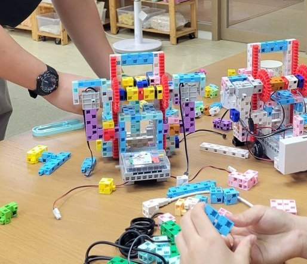
- 2026 ESP32 hovercraft
Fire defender
A robot that watches for wildfire and raises the alarm, built for the 2023 season and shown on a diorama. From 1:23 to 1:52 of the competition video.
Line lost
Black again
2026, physics lab: a homemade Arduino photogate for free fall. Measured g = 9.14 ± 0.16 m/s². The first answer was 8.46, and the error was in my own code: one button press started the timer and released the servo.
The road
A self‑driving car is a line tracing robot with better eyes. In August 2026 I spent three weeks in Taiwan as a research intern on a self‑driving‑car project. I was the researcher who designed the prediction stack of its detection system.
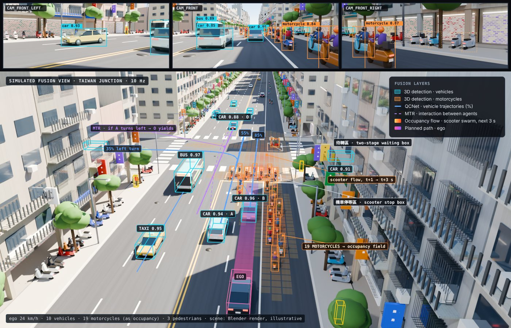
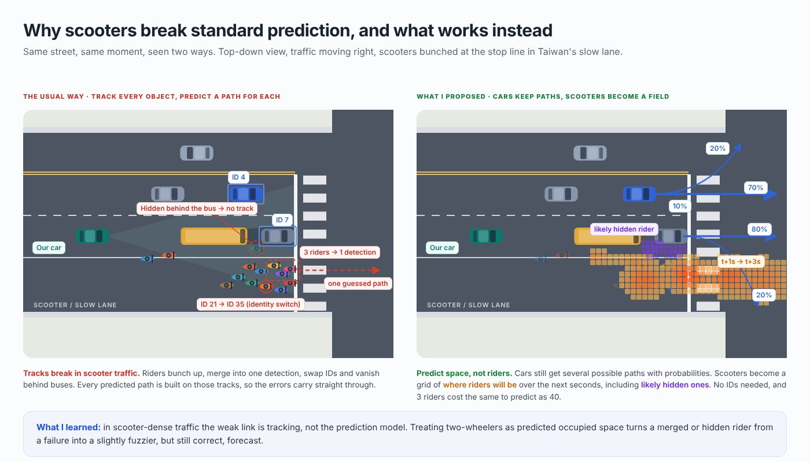
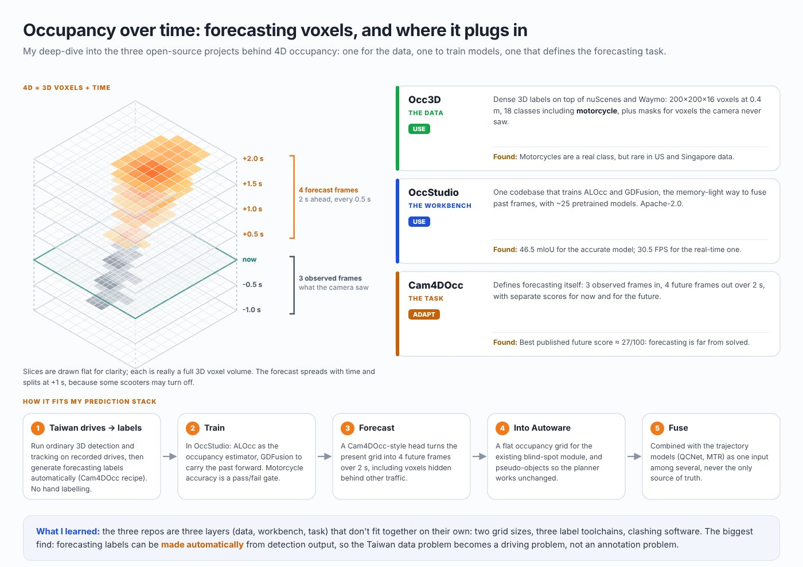
Highlit
I'm a student‑athlete myself, and I was in the position where getting a college coach's attention felt impossible. So I built an app that sends emails to every college coach in the country, from the athlete's own Gmail. Watching my peers go through the same trouble, I saw a reason and a path to turn it into a business and change recruiting for athletes: I know first‑hand how much pressure and time it takes, for the athletes and for their parents.
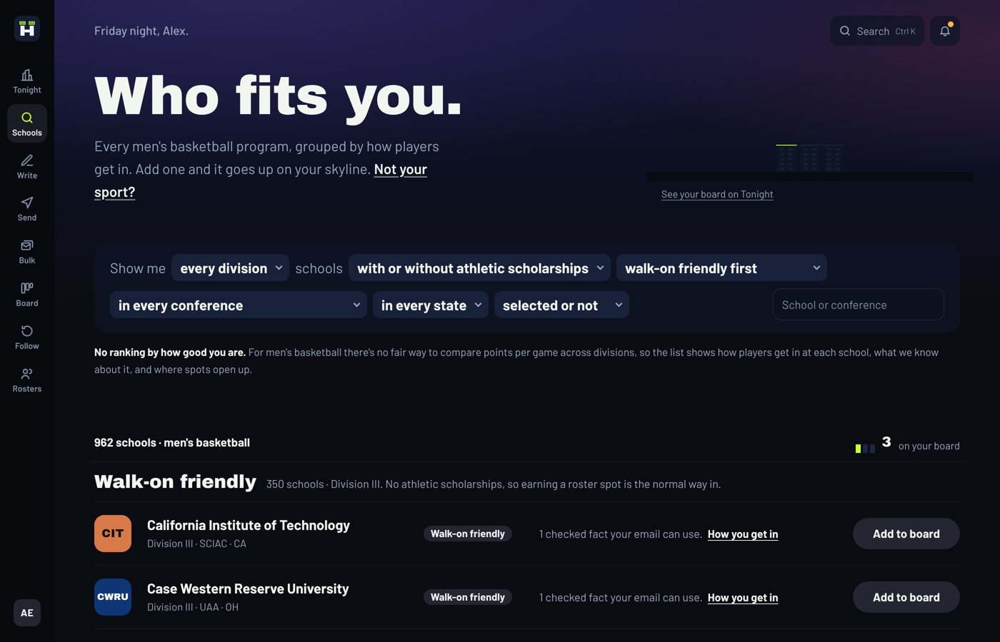
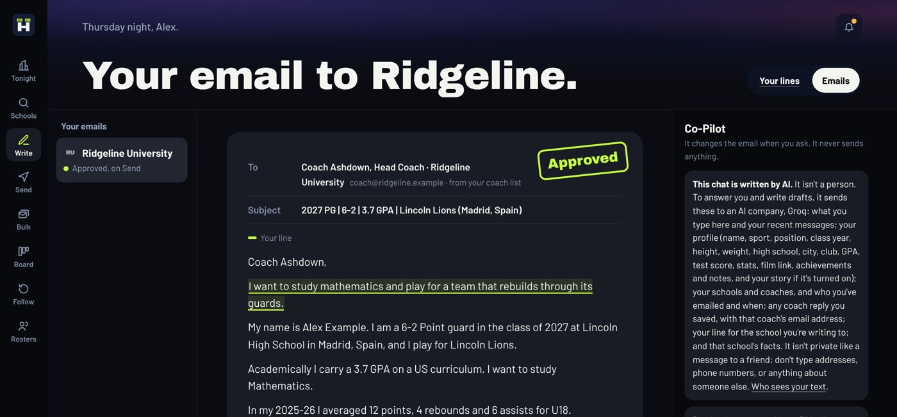
Try the live pre‑release (a free server: the first visit can take up to a minute to wake) →
Drosophila connectome feedback loops (Liquid technologies)
On 13 September I saw a video of a simulated fruit fly playing with a Rubik's cube, and I couldn't stop reading. Scientists have mapped every one of a fruit fly's 138,639 brain cells and how they connect, so a computer can run a copy of that brain. I started training one myself, but after countless tries I was just a controller telling the fly what to do. It never got better on its own.
Then, instead of telling the fly what to do, I let evolution change it: 78 slightly different flies faced a predator over 15 generations, and the ones that did best passed on their changes.
Evolution found 12 such changes. With them, the fly started escaping the predator on its own. Part of the change also worked when I copied it into a second fly's brain.
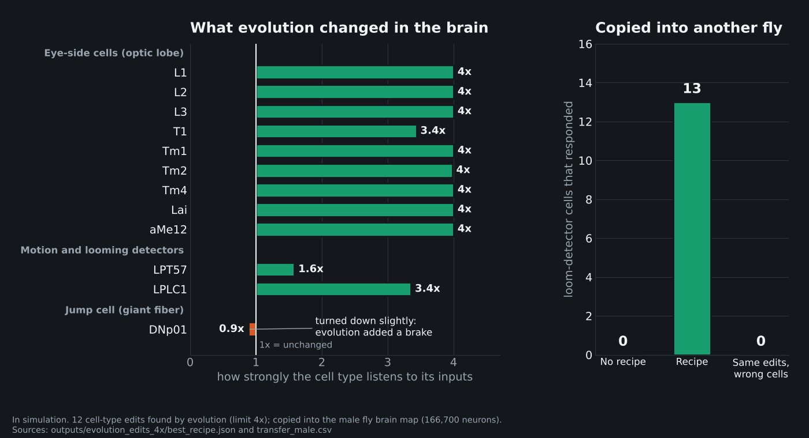
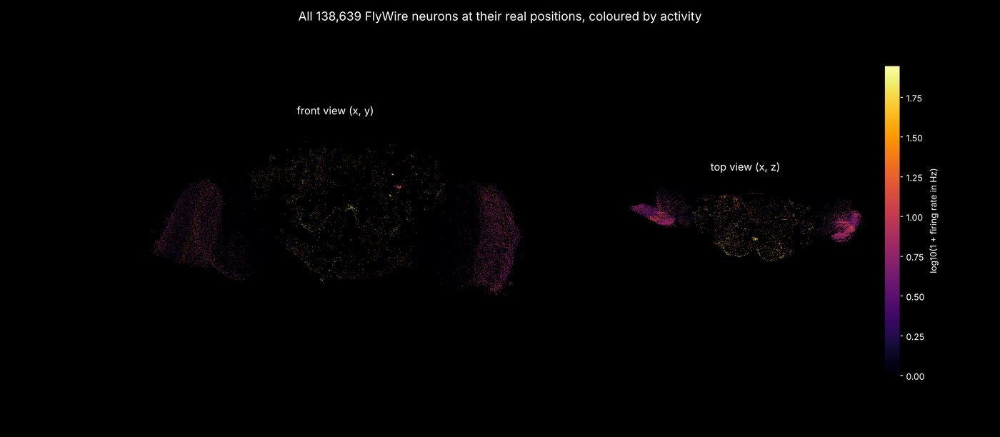
Sports prediction, all in one
After the World Cup, a guide to five prediction models hooked me, and I wanted to compete with the best: the bookmakers. They won 23 of 24 seasons. I kept the whole record anyway, fingerprinted before every kickoff, so nobody can change it afterwards.
Nations League, 12 Nov 2026: chance of each result
Forecast made Thu 5 Nov, a week before kickoff, and fingerprinted on the public record the same day.
- Beat a simple guess 24 of 24
- Lost to the bookmakers 23 of 24
- Football, NBA and NFL, live
Trading algorithm research (Python, QuantConnect)
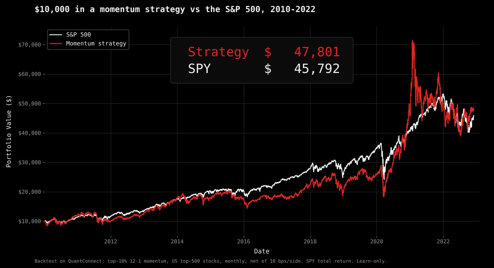
I built a research pipeline for testing stock-trading ideas the way a quant desk does: every idea is written down and locked before any price data is read, then it has to pass a placebo test, hold up in both halves of the data, and clear a strict significance bar (t ≥ 3.3) before I'd count it as real.
- 130+ pre-registered tests.
- Momentum backtest, 2010 to 2022: $10,000 became $47,801 against $45,792 for the S&P 500. The edge was not significant and the worst drop was −45% against −34%, so I didn't treat it as a winner.
Jarvis
I always wanted an AI helper that automates my workflow, a Siri for my laptop. I started building it sure the bottleneck was memory and RAM. Testing said otherwise: I didn't need a more powerful local model or more memory, I needed proper memory allocation. Public copy →
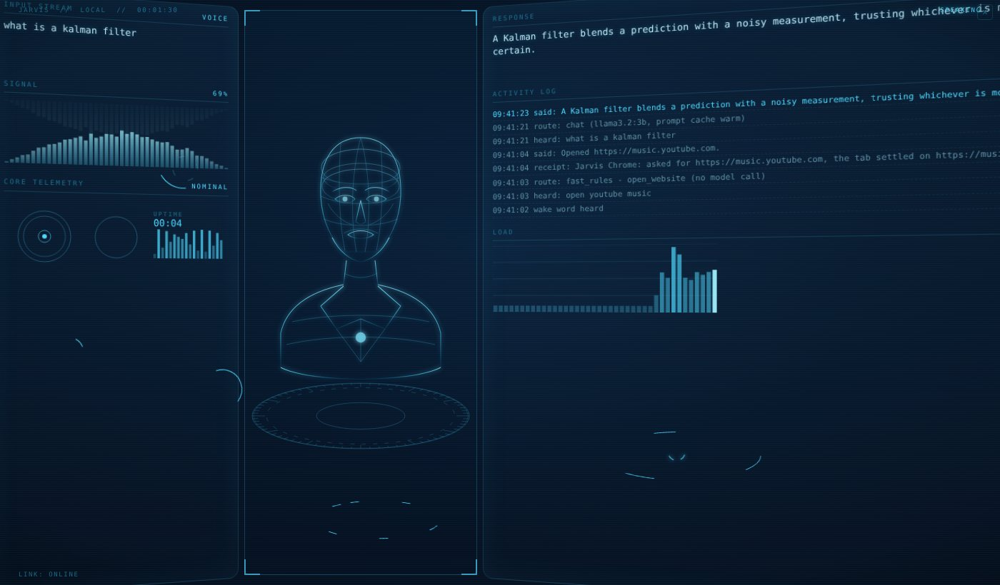
Mail hub
Cold outreach was consuming the hours I wanted to spend building, so I automated it. Mail hub checks every address before sending, sends in bulk with follow‑ups, reads incoming mail, fetches and answers replies in bulk, and shows a dashboard of current emails and events.
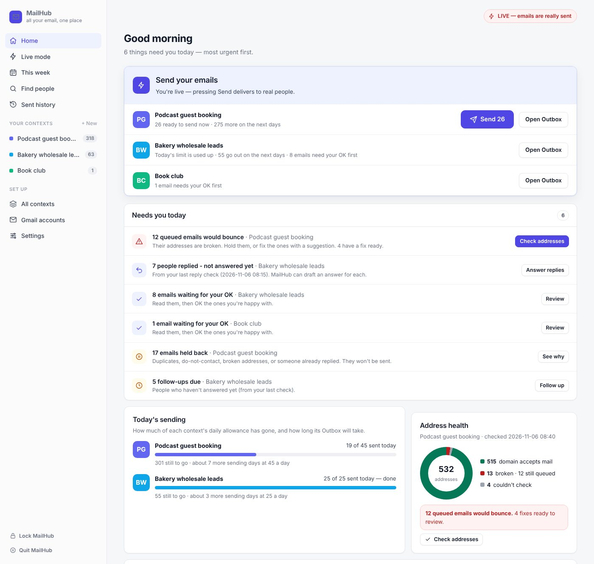
Typer
Can typing rhythm show whether someone writes their own answer or copies one? I want an honest answer before anyone builds anti‑cheat tools on it. Typer times each key press in its own typing box, and its Simulator learns your rhythm and fakes it, to test the detector.
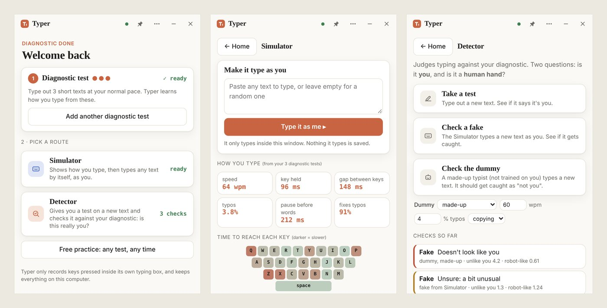
Shelter Inventory Manager
It started in January 2026 as the internal assessment for my IB Computer Science course. I consulted a charity in Taiwan for feedback and saw it could help real food banks, charities and small businesses. So I polished it, made it free, and emailed about 3,000 charities and businesses to offer it.
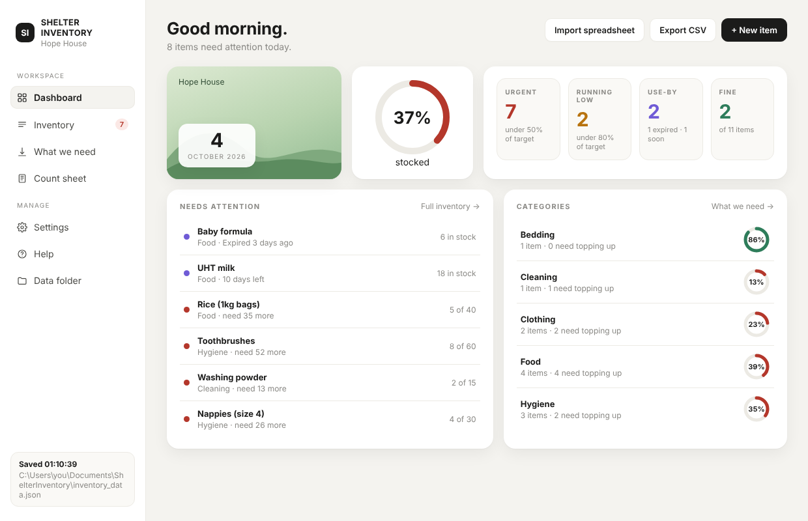
- 21 downloads
On every project on this page I am the owner, and AI coding tools write most of the code. I decide what to build and what the tests must prove, and I run them. I read the code Claude writes with a tool called Vibe Wise until I understand it, then audit it for what is missing and work out the next step. I review every change and throw away what fails. Every project above has a graveyard: ideas tested and killed, with the numbers kept.
You're in pieces in Taipei. I never meant to leave you there. I'm in Madrid now. I keep going back to the run.
An IR photoreflector does one thing. It shines infrared at the floor and measures what bounces back. Black tape returns almost nothing. White floor returns a lot. Everything you knew came from that one number and the threshold I set between them.
I set my first threshold in a Taipei classroom when I was nine. I used the same method for the next seven years. Osaka, Korea, Australia. Different rooms, same approach. People assumed that was discipline. It was closer to comfort.
My father died when I was eight. I don't have a good way to describe what that does to a kid who doesn't have the words for it yet. I got quiet. I stopped wanting to try things. My mom, who could still see something in me, kept signing me up. Sports, painting, then a robotics camp. You were the first thing in a long time that did exactly what I told you to.
That is what I loved. Not you. The rules. A black line has an inside and an outside. There is a right answer and you can go find it.
My grandfather offered me the same thing in a different form. He built a company from nothing. After dinner, he told me how, and he always used the same phrase: Chī Kǔ. Eat bitterness. Endure. He meant stay on the line. He meant something else too. In his world, a grandfather is measured by where his grandchildren get in. My cousin got into Brown. That gets said out loud at dinner.
So I stayed on the line. I was good at it.
Osaka, 2018, elementary division. The robot before you traced a line to a marked position and fired rubber bands at a target. In trial runs I hit every shot. In the final my hands were shaking, my finger slipped, and the photoreflector ended up an inch off. One inch. The shot missed. We lost.
I replayed it for years. When it surfaced I shook my head to get rid of it. I had already learned, earlier and harder than most kids do, that one small thing going wrong can take everything with it. An inch felt like proof.
Korea, 2021. A map test run, a patient transfer robot. Your sensor read wrong at the first intersection and you lost the line.
I reached for stop. I always reach for stop. A failed run is ugly and I would rather not watch.
I didn't stop you.
Then you spun. I wrote that months after Osaka, at ten: search until you find black again. I assumed failure was coming. I wrote it for you. I never wrote it for me.
You found the line. Lost it, spun, found it. Again. Again. You finished the map. My hand was still on the button. I still don't know why.
I lost you in Madrid. Not you, the whole line. There was no robotics there. The robotics class was in Spanish. I stopped going. Then it was cancelled. For two years I did what I had always done with a lost line. I left it. It was easy. That's the part I don't like saying.
Then my physics teacher put an Arduino on the desk. “Try building your experiment with this,” he said. A photogate. Infrared, like you, except it reads what gets in the way. I was in that lab three hours a day for two months. Testing. Failing. Testing again. I had not decided to come back. I had just been searching, the way you did, until something read black.
My grandfather taught me Chī Kǔ means never leaving the line. You taught me it means finding it again. It took you microseconds. It took me two years. It was the same function.
felipe.vicente0227@gmail.com · felipe.vicente@aasgmail.com (school)
WhatsApp and Signal: +34 665 622 925 · LINE: +886 909 609 226